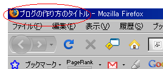

ブログタイトルはＨＴＭＬ上ではＴＯＰページのタイトルタグで囲まれた部分が表示されることになります。タイトルタグは<title>なタグで、たいていＨＴＭＬの最初の方に出てくることになります。
ブログタイトル以外にも個別に記事タイトルがあり、その記事のタイトルがどのような表示がされているかを確かめるには自分のブラウザで確認してみるといいと思います。

このタイトルタグはそれぞれのページにつきひとつづつ出てくることになります。たとえば、あなたのブログのページ数が記事が１００ページあって、カテゴリ、過去ログページでそれぞれ３０ずつあったとしたら、全部で１６０タイトルあることになります。
ブログタイトルの作り方の続き